Intent exists without a path.
People want to upcycle but lack the tools, skills and community support to act consistently.
ImplicationDesign for the first step, not the informed user.
A mobile platform for sharing, trading and learning upcycling, grounded in Kaitiakitanga — the Māori principle of reciprocal guardianship over people, materials and place.
People want to reduce waste and reuse materials. The intent is consistent. The behaviour rarely follows. Mainstream platforms offer either commerce or inspiration in isolation, and none of them connect practical reuse to the relational ethic that makes the habit durable. ReKraft addresses this gap by combining three linked modules: Community for sharing ideas and outcomes, Market for trading and gifting materials, and Ako for short learning missions rooted in guardianship values.
The project aligns Te Ao Māori values with SDG 12 (Responsible Consumption and Production). The design argument is that cultural framing is not a visual layer. It is a motivation architecture. When people understand that their actions participate in a living system of care rather than a transaction, the behaviour changes.
Problem
The gap between sustainability intent and daily action is well documented. The barriers are both practical — no skills, no materials, no starting point — and relational. Without a community context that gives reuse shared meaning, the habit stays fragile. Eight distinct problem categories were mapped from research, and together they pointed to one core diagnosis: people lacked not information, but a reason to act that felt personally and culturally meaningful.
Discovery started with a deliberate question: what does Kaitiakitanga demand of a digital product? Literature review established the cultural and ethical stakes. Te Ao Māori frames guardianship as relational and reciprocal, not transactional. SDG 12 sets the global policy direction. But neither translates into interaction design without understanding where and why reuse breaks down for real people.
Platform benchmarking surfaced the gap. Existing tools — Pinterest, Facebook Marketplace, Depop, repair café networks — each solve one dimension. None hold community reciprocity, cultural meaning and practical reuse literacy together in one place. This was not a feature gap. It pointed to a missing motivation architecture: without a reason to act that connects personal behaviour to collective or cultural value, the habit does not form.
Research synthesis produced six findings and six design insights. The findings confirmed that practical barriers and motivation gaps reinforce each other. The insights redirected the design toward activation over education. Lower the first step, make community visible, surface provenance and impact, embed Māori values through action rather than aesthetics.
People want to upcycle but lack the tools, skills and community support to act consistently.
ImplicationDesign for the first step, not the informed user.
Most people do not see creative reuse potential in everyday waste without a prompt or example.
ImplicationSurface ideas before asking people to act on them.
The origin of materials and the real impact of actions shape whether people participate and return.
ImplicationMake impact visible, not assumed.
No existing platform connects reuse to a relational ethic, which weakens long-term meaning.
ImplicationEmbed values through interaction, not decoration.
Social recognition and shared momentum outperform one-off informational nudges.
ImplicationDesign for contribution, not just consumption.
Craft and DIY processes often produce offcuts and discards that extend the circularity problem.
ImplicationClose the loop by including material sharing in the making flow.
With six findings in hand, the next step was deciding what the product should actually do. A persona, Emma, consolidated the target user: a young professional who cares about sustainability, has some DIY interest, and wants community but lacks the skills and confidence to start. Emma was not designed to represent everyone. She was designed to hold the tension between intent and inaction that the research kept returning to.
Ideation expanded the solution space before collapsing it. The core MVP scope — community sharing, a values-aligned marketplace, and short learning missions — was separated from post-MVP extensions such as AI material recognition and token systems. This decision mattered because it kept the first version coherent and testable rather than ambitious and diffuse.
Three modules defined the MVP: Community for sharing and co-creating, Market for trading and gifting with origin and impact cues, and Ako for short learning missions tied to guardianship values. Each module addresses a different barrier from the research without duplicating what the others do.
The user journey mapped three phases: Before, where users discover ideas and enter the platform through a values-anchored onboarding; During, where they circulate materials, make things and share outcomes; and After, where they track impact, earn recognition and deepen their understanding of guardianship. This three-phase framing influenced every information architecture decision that followed.
Prototyping moved from paper sketches to lo-fi flows to mid-fidelity screens. Each stage had a specific job. Sketches validated navigation and entry points. Lo-fi flows established content hierarchy and tested whether the three modules felt distinct but connected. Mid-fidelity introduced typography, iconography and accessibility checks before visual refinement began. Three key flows guided the testing: community post publishing, marketplace browse-to-purchase, and Ako mission progression.
Design System
The design system was not built after the content. It was developed alongside it, because the visual language needed to express Kaitiakitanga rather than decorate it. Every colour, type and illustration decision was tested against the question: does this feel like guardianship, or does it feel like greenwashing?
Colour
The palette centres on forest and teal greens drawn from natural ecosystems rather than brand conventions. The dark green grounds the interface with stability. The mid teal carries interactive and action states. Secondary tones support hierarchy without competing for attention.
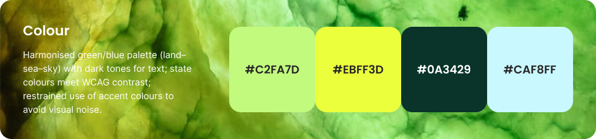
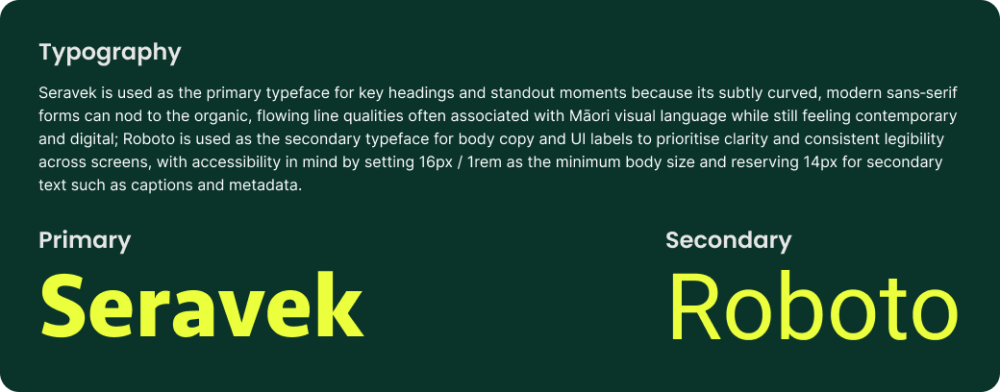
Typography
Seravek carries headlines with a rounded, approachable quality that suits community content. Roboto handles body text and interface labels at smaller sizes. The pairing avoids the coldness of purely technical typefaces while maintaining clear reading hierarchy across a dense information environment.
Illustration and Icons
Illustrations use a loose, crafted style that references the act of making by hand. This was a deliberate choice against polished stock imagery, which would undermine the platform's claim that reuse is accessible. Icons follow a consistent weight system for navigational and action states.
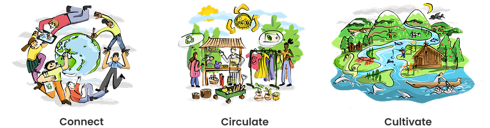
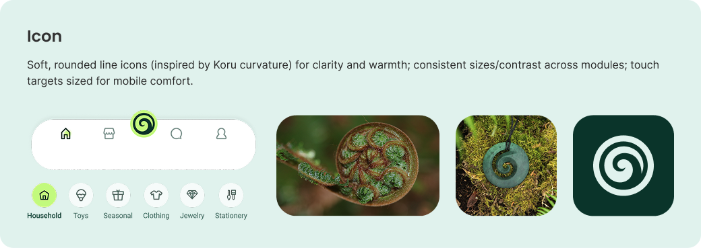
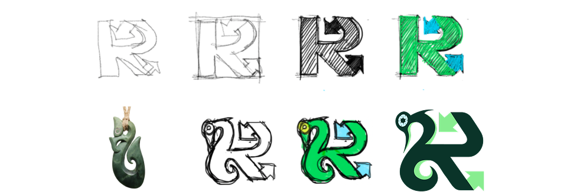
Brand Identity
The ReKraft wordmark pairs with a circular mark that references both the recycling loop and the koru — a Māori symbol of growth and new beginnings. The identity needed to work across a mobile interface and physical touchpoints without losing legibility or cultural resonance at small sizes.
Final Design
The final hi-fidelity prototype brings Community, Market and Ako into a unified experience held together by the Koru navigation system. Each module solves a different part of the original problem, and each one earns its place by addressing a finding from the research directly.
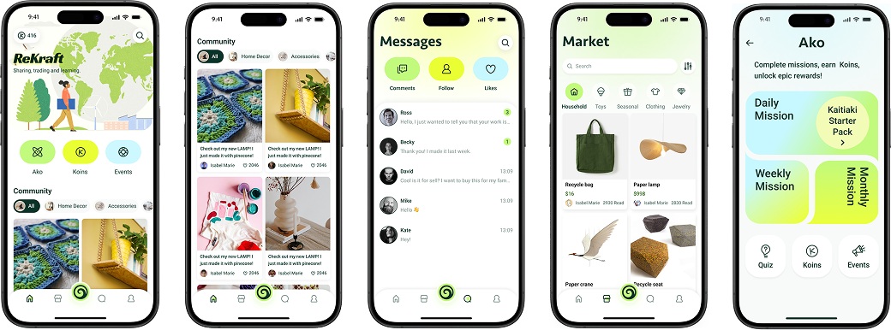
Module Decisions
The three modules were not designed as features. They were designed as answers to specific research findings. The community feed answers the isolation problem. The market answers the access and trust problem. Ako answers the skills and meaning problem. Together they form a loop rather than a list.
Community
The Community module centres on DIY sharing and peer recognition. The design decision was to prioritise posts that show the before state — the raw material — alongside the outcome. This reduces the intimidation of a polished result and makes the making process itself the contribution. Users see that the gap between waste and creation is smaller than they assumed.
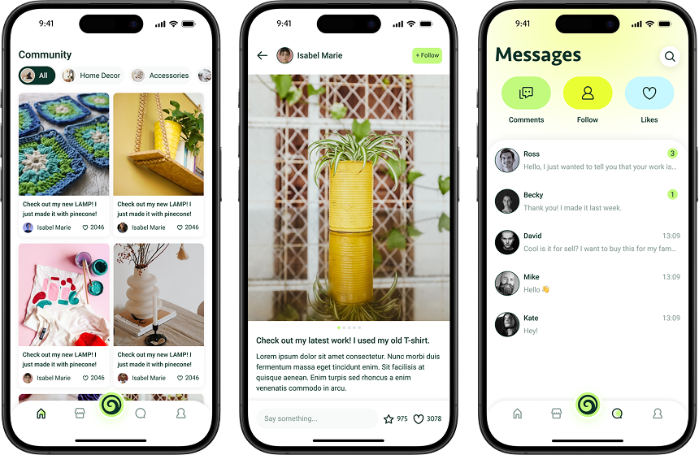
Market
The Market module applies a key insight from the trust finding: people are more likely to engage with a listing when they understand where the material came from and what giving it away or buying it means in circularity terms. Every listing includes provenance and impact fields. This is not optional metadata. It is the mechanism that turns commerce into a values-aligned exchange.
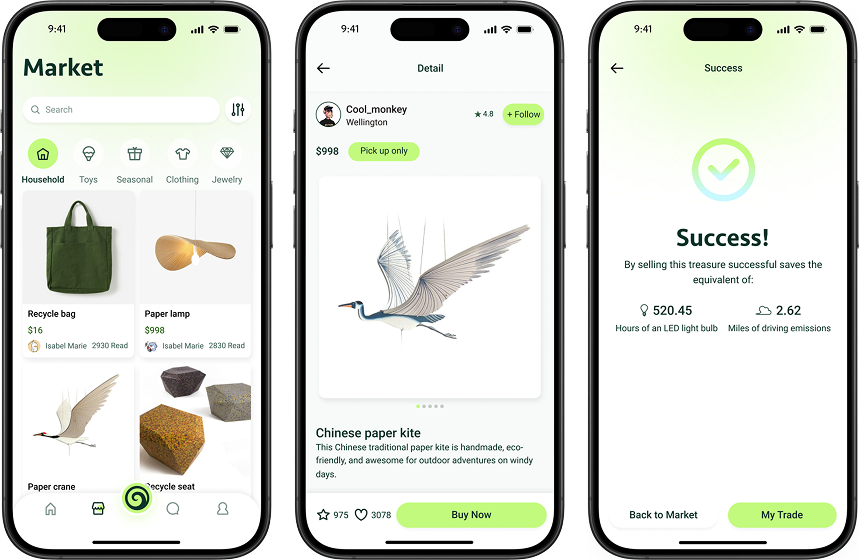
Ako
Ako is the learning module, but it was not designed as an education product. It was designed as a habit formation system. Missions are short, action-first and tied to the Koin recognition system. Completing a mission earns visible community standing, which connects personal learning to the relational value that Kaitiakitanga describes. The module closes the loop between knowing and doing.
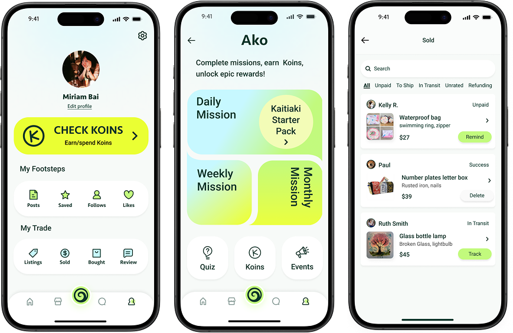
Onboarding
The onboarding flow was one of the last things designed and one of the most considered. The decision to lead with a Kaitiakitanga story rather than a feature tour was deliberate. Users who understand the platform's purpose before they see its features are more likely to form the right mental model for what the community asks of them. The first experience sets the relational contract.
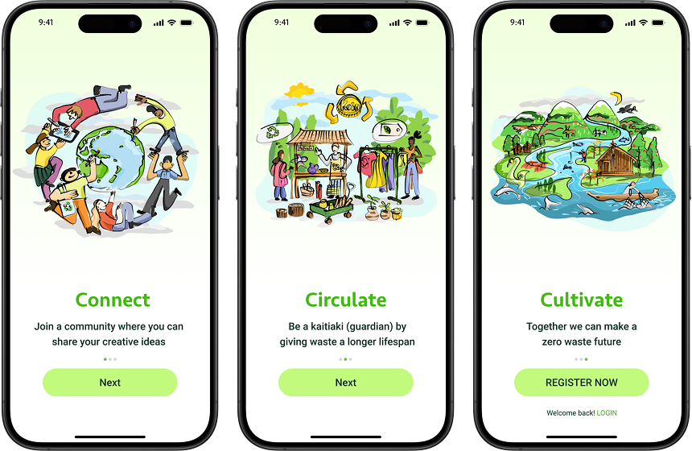
Outcome
Usability testing with five participants validated the three-module structure and confirmed that the Kaitiakitanga framing increased perceived meaning without adding cognitive load. Navigation through the Koru system scored well. The main iteration from testing was reducing the number of fields required to post in Community, because the barrier to first contribution was higher than the research predicted. The platform is not yet live. The next evidence should come from a wider pilot with a real community group.
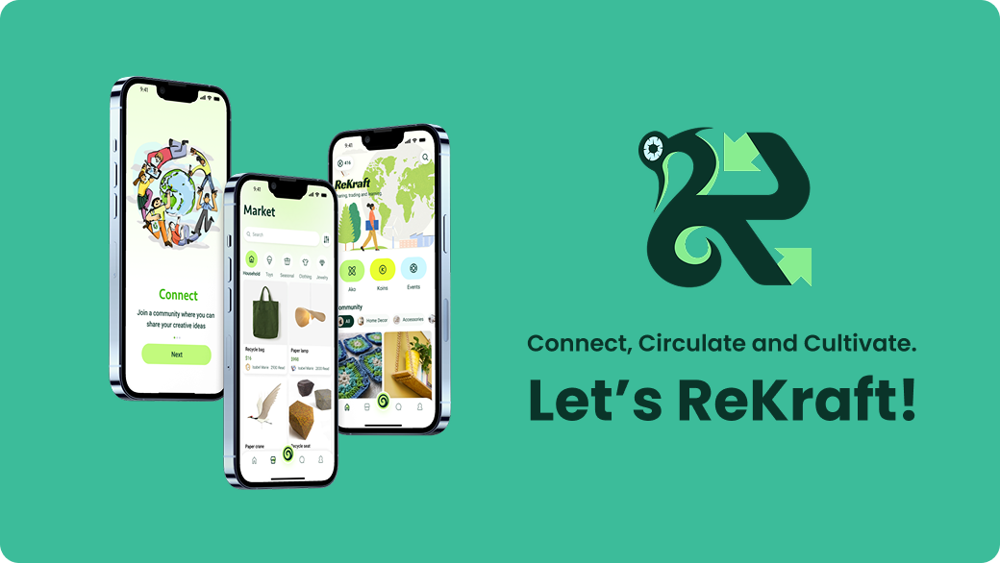
Retrospective
The project demonstrated that cultural framing can function as a motivation architecture rather than a visual add-on. The three-module structure held together through testing without needing significant structural revision.
Five usability participants is not enough to test a culturally situated product. Māori community input was referenced in the literature review but not embedded in the co-design process. That gap needs closing before any real deployment.
A community pilot, genuine co-design with Māori knowledge holders, and longitudinal behaviour tracking to test whether the Koin system actually sustains circular habits rather than rewarding one-off engagement.
Primary recipe R07 · Purpose Story Script Identity × Meaning × Medium
This project uses R07 because the core design challenge was not functional. It was motivational. ReKraft needed to help people understand who they are in relation to materials, community and the environment before it asked them to do anything. The onboarding, the Ako missions and the provenance fields in the Market all express the same recipe: anchor identity, then invite action.
Related Projects
 Digital Systems
New World Design System
A design system case focused on reusable UI structure at scale.
Digital Systems
New World Design System
A design system case focused on reusable UI structure at scale.
 Community
Voting Starter Kit
A multi-channel starter kit helping new immigrants engage with local elections.
Community
Voting Starter Kit
A multi-channel starter kit helping new immigrants engage with local elections.
 Service Systems
Accessibility Support Hub
A support pathway case focused on clearer access to court assistance.
Service Systems
Accessibility Support Hub
A support pathway case focused on clearer access to court assistance.